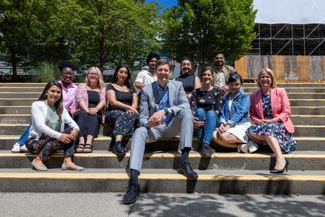

省长尹大卫 (David Eby) 于「卑诗日」（B.C. Day）发表讲话。
他说：「卑诗省日是庆祝我们生活在这片美丽土地的一个好时机。在这个周末，无论是外出露营，还是在水上或沙滩上消磨时间，又或是仅想放松心情，享受与家人和朋友相聚时刻，卑诗省日都是一个让我们反思家园的机会。」
「在卑诗省，我们的优势就是多元化。卑诗省一直是世界各地移民的首选目的地，他们所带来的语言和文化使本省社会结构变得更加丰富。我们与世代居住在这里的第一民族共同分享这片迷人的土地，我们致力继续与原住民合作，推进和解工作，并落实《联合国原住民权利宣言》 (United Nations Declaration on the Rights of Indigenous Peoples)。我们将会更坚定地共同努力，为每个人创造一个更光明的未来。」
他还说：「类似以往情况，卑诗省日再次遇上山火和乾旱恶化的挑战。政府将会继续支援面临山火威胁和可能随时需要疏散的卑诗省居民。我们再次衷心感谢奋力应对山火和紧急事故的前线消防人员、急救人员和社区组织者。他们的专业和牺牲精神正好体现了我们在本省所重视和珍惜的价值观。」
在讲话最后，尹大卫祝愿全省省民度过一个安全和愉快的卑诗省日。